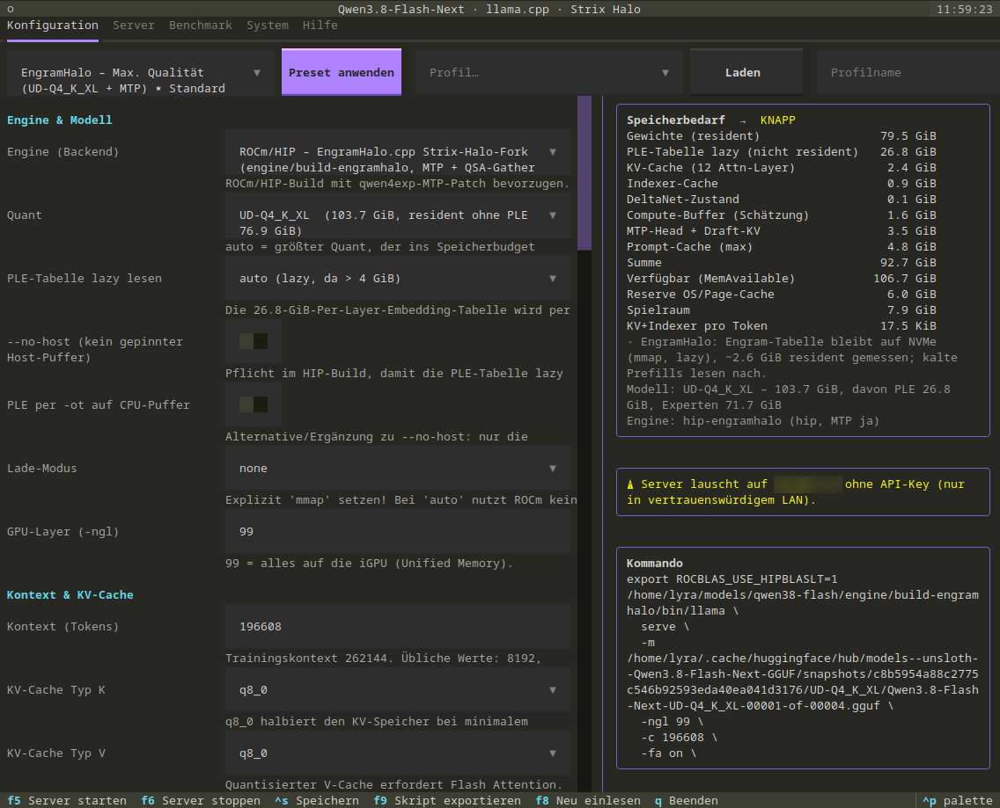

Anleitung
Installation, Modell-Download, Build der Engines und Start des Servers.
Voraussetzungen
- AMD Strix Halo (gfx1151) mit 128 GB, Linux mit ROCm/HIP 7.x,
cmake,ninja,git. - Kernel-Parameter
amd_iommu=off amdgpu.gttsize=126976 ttm.pages_limit=32505856, damit die GPU fast den ganzen RAM nutzen darf. - Python 3.12+, uv, die Hugging-Face-CLI
hf, rund 200 GB freier NVMe-Platz.
Installation
# 1. Programm
git clone <Repo-URL> qwen38-flash && cd qwen38-flash
uv sync
# 2. Modell und MTP-Head
hf download unsloth/Qwen3.8-Flash-Next-GGUF --include 'UD-Q4_K_XL/*'
hf download dzannotti/Qwen3.8-Flash-Next-MTP-GGUF Qwen3.8-Flash-Next-MTP-Q4_K_M.gguf
# 3. Engines
engine/fetch.sh # llama.cpp + EngramHalo.cpp holen und patchen
engine/build-engramhalo.sh # empfohlene Engine
engine/build.sh hip # zweite Engine
# 4. Starten
./run.sh # Terminal-Programm, Preset "EngramHalo – Max. Qualität", F5
Empfohlene Kommandozeile (ohne Programm)
ROCBLAS_USE_HIPBLASLT=1 engine/build-engramhalo/bin/llama serve \
-m .../UD-Q4_K_XL/Qwen3.8-Flash-Next-UD-Q4_K_XL-00001-of-00004.gguf \
-ngl 99 -c 131072 -fa on -ctk q8_0 -ctv q8_0 -b 8192 -ub 2048 -t 4 -lm none \
-md .../Qwen3.8-Flash-Next-MTP-Q4_K_M.gguf -ngld 99 \
--spec-type draft-mtp,ngram-mod --spec-draft-n-max 4 --spec-draft-p-min 0.75 \
--jinja --chat-template-kwargs '{"reasoning_effort":"medium"}' \
--temp 1 --top-p 0.95 --top-k 20 --min-p 0 \
--host 0.0.0.0 --port 8080 --metricsFür mehrere Nutzer: -np 8 setzen (der Kontext gilt dann für alle Slots zusammen) und die drei MTP-Zeilen weglassen.

Presets im Programm
| Preset | Engine | Quant | Kontext | MTP | Zweck |
|---|---|---|---|---|---|
| eh-qualitaet (Standard) | EngramHalo | UD-Q4_K_XL | 131072 | an | beste Qualität, ein Nutzer |
| eh-no-thinking | EngramHalo | UD-Q4_K_XL | 131072 | an | Chat und Tools ohne Thinking |
| eh-schnell | EngramHalo | UD-IQ3_XXS | 32768 | an | kleinster Footprint |
| eh-longctx | EngramHalo | UD-IQ4_XS | 163840 | an | lange Dokumente |
| stock-* | llama.cpp + Patch | IQ4_XS / IQ3_XXS / Q2_K_XL | je nach Preset | an | Fallback ohne EngramHalo |
Fehlerbehebung
- Kernel-OOM: Speicherbilanz im Programm prüfen (Spielraum mindestens 8 GB), kleineren Quant oder Kontext wählen, andere LLM-Prozesse beenden.
- Ladevorgang dauert Stunden:
--load-mode mmapbeim Stock-Fork. Lade-Modus auf auto stellen oder EngramHalo verwenden. - MTP-Head lädt nicht: unsloth-Head gewählt. dzannotti-Head verwenden.
- Unexpected reasoning effort: nur xhigh, medium, low sind erlaubt.